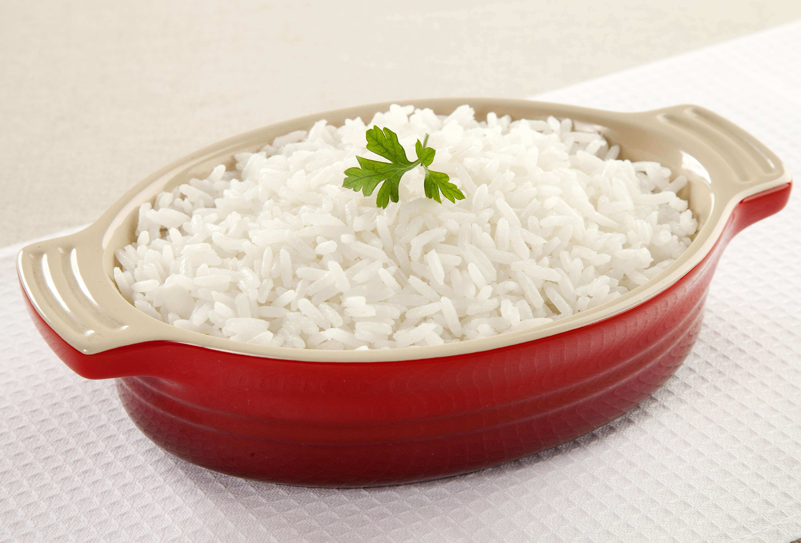

Brazilian White Rice
Home

Source: allrecipes.com (adapted)
Description
White rice is the main side dish in Brazilian cuisine.
Ingredients
- 2 cups of long-grain white rice
- 2 cloves of garlic, minced
- 2 tablespoon of vegetable oil
- Salt
- Water
Steps
- Heat the oil in a saucepan
- Stir in the garlic and cook until it gets golden brown
- Add the rice, cook and stir it until it begins to brown
- Pour a little more water then enough to cover the rice
- Add salt at your taste. Usually, the water should start resemble seawater
- When the water boils, reduce the fire to low
- Cover the saucepan allowing it to simmer until the water has been absorbed
- If the rice is still uncooked, add just a tiny bit more water and let it be absorbed
- After cook it should be loose, not stick
- Let it rest for 10 minutes before serving